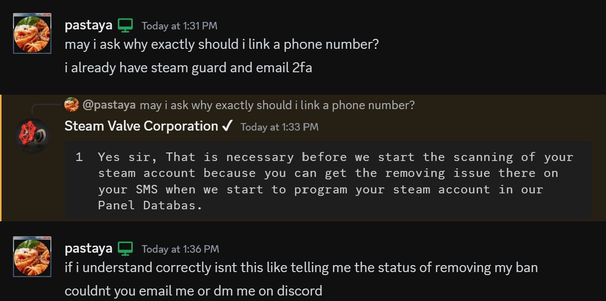
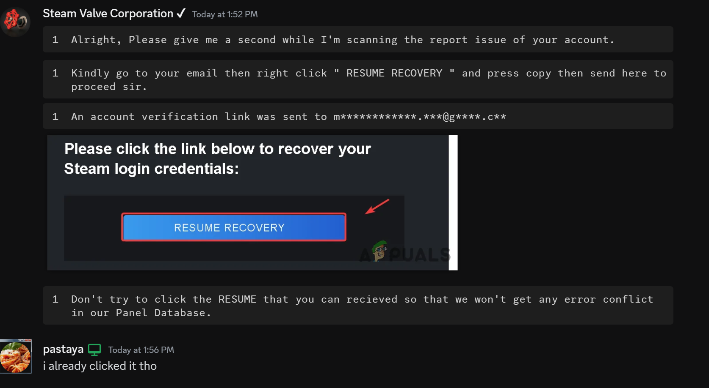

i decided to play along since i was playing some minecraft and i got really annoyed cuz i was about to beat the game
first i get over that interaction with LUCI or smth idk forgot the name quickly, basically i had almost NO PLAN WHATSOEVER lmao
so basically i was exchanging information with Computerbiscuit my best friend so we can both think about what to do,

ok so this is the opening message to the scammer (notice how hes using codeblocks)

this is the scammer telling me to give him the purchase history, what i did was actually inspect elemeted the button out as my excuse lmao
it kinda failed he found a button called licenses and product activation which is a more barebones purchase history
hes telling me if i have a phone number on my stean account (which i did) so i lied and said i didnt

he told me to link a phone number so the scammer can provide "status of my ban" so as an excuse i told him just email
he asked me for my email so i told him check the database tho and then he proceeded to "scan" my steam account and he said you should close steam so it doesnt error out
so i waited like 1 min and i was eating my spaghetti (surpise surpise) and told him yea im offline try now, he found out that im still online
so i told him i had a browser window open with steam opened as an excuse and he believed it
afterwards he said he sent an email to my email for a steam RECOVERY link and told me dont click it (pretty late ngl)
i used it as a chance to say i clicked it

i told him my right click was broken lmao so he told me to click it and copy the url above

so i took my recovery link and changed it up so its broken, he insisted on the link even when it was broken so i asked him why
and he went offline and blocked me on both accounts, this is proof that steam scammers are still on the platform,
anyways finally this is finished this took me 1 hour to code, anyways go back